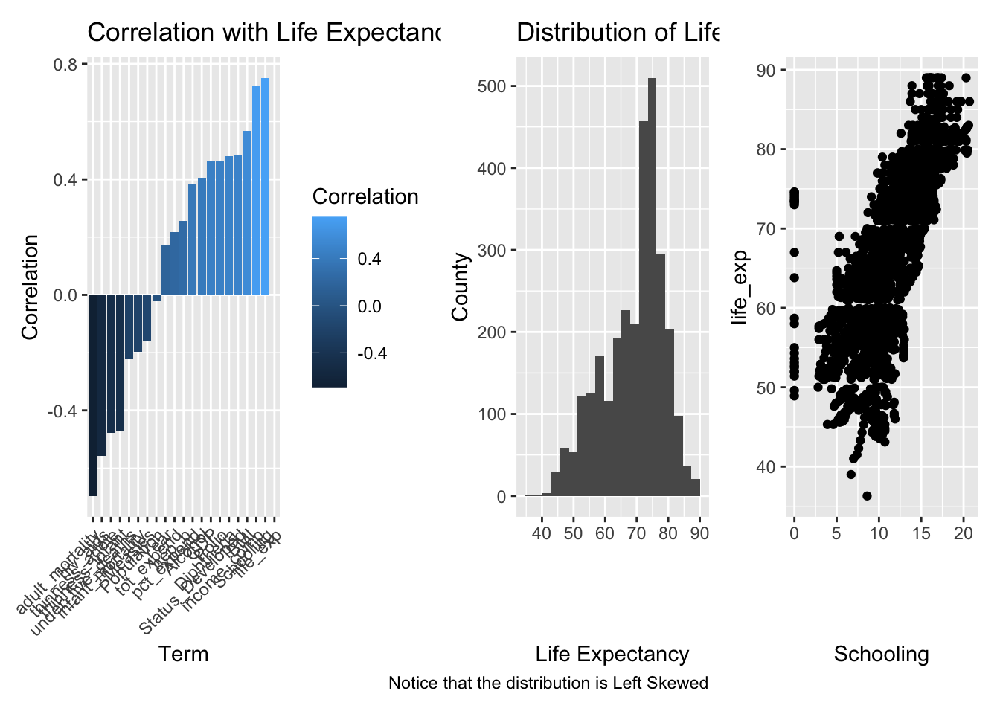

# A tibble: 2,938 × 22
Country Year Status `Life expectan…` `Adult Mortali…` `infant deaths`
<chr> <dbl> <chr> <dbl> <dbl> <dbl>
1 Afghanistan 2015 Developi… 65 263 62
2 Afghanistan 2014 Developi… 59.9 271 64
3 Afghanistan 2013 Developi… 59.9 268 66
4 Afghanistan 2012 Developi… 59.5 272 69
5 Afghanistan 2011 Developi… 59.2 275 71
6 Afghanistan 2010 Developi… 58.8 279 74
7 Afghanistan 2009 Developi… 58.6 281 77
8 Afghanistan 2008 Developi… 58.1 287 80
9 Afghanistan 2007 Developi… 57.5 295 82
10 Afghanistan 2006 Developi… 57.3 295 84
# … with 2,928 more rows, and 16 more variables: Alcohol <dbl>,
# `percentage expenditure` <dbl>, `Hepatitis B` <dbl>, Measles <dbl>,
# BMI <dbl>, `under-five deaths` <dbl>, Polio <dbl>,
# `Total expenditure` <dbl>, Diphtheria <dbl>, `HIV/AIDS` <dbl>, GDP <dbl>,
# Population <dbl>, `thinness 1-19 years` <dbl>, `thinness 5-9 years` <dbl>,
# `Income composition of resources` <dbl>, Schooling <dbl>Life Expectancy
life <- life %>% mutate(Status = factor(Status, levels = c("Developing", "Developed"))) %>%
rename(life_exp = "Life expectancy", adult_mortality = "Adult Mortality",
infant_mortality = "infant deaths", pct_expend = "percentage expenditure",
hep_b = "Hepatitis B", under_five_deaths = "under-five deaths",
tot_expend = "Total expenditure", hiv_aids = "HIV/AIDS",
thinness_adole = "thinness 1-19 years", thinness_infant = "thinness 5-9 years",
income_comp = "Income composition of resources") Exploratory Data Analysis
recipe <- recipe(life) |>
update_role(Country, new_role = "id variable") |>
step_mutate(Country = as.character(Country)) |>
step_dummy(all_nominal()) |>
prep()Warning: The following variables are not factor vectors and will be ignored:
`Country`life <- bake(recipe, life)
p1 <- corrr::correlate(life) |>
select(term, life_exp) |>
ggplot(aes(x = reorder(term,life_exp), y = life_exp, fill = life_exp)) +
geom_col() +
theme(axis.text.x = element_text(angle = 45, hjust = 1)) +
labs(
x = "Term",
y = "Correlation",
fill = "Correlation",
title = "Correlation with Life Expectancy"
)Non-numeric variables removed from input: `Country`
Correlation computed with
• Method: 'pearson'
• Missing treated using: 'pairwise.complete.obs'p2 <- ggplot(life, aes(x = life_exp)) +
geom_histogram(bins = 20) +
labs(
x = "Life Expectancy",
y = "County",
title = "Distribution of Life Expectancy",
caption = "Notice that the distribution is Left Skewed"
)
corrr::correlate(life) |>
select(term, life_exp) |>
filter(term!= life_exp) |>
mutate(life_exp = abs(life_exp)) |>
arrange(desc(life_exp)) |>
head(2) |>
pull(term)Non-numeric variables removed from input: `Country`
Correlation computed with
• Method: 'pearson'
• Missing treated using: 'pairwise.complete.obs'[1] "Schooling" "income_comp"# what is relationship between the two must importnat factors
p3 <- ggplot(life, aes(x = Schooling, y = life_exp)) +
geom_point()p1 + p2 + p3 +
plot_layout(ncol = 3)